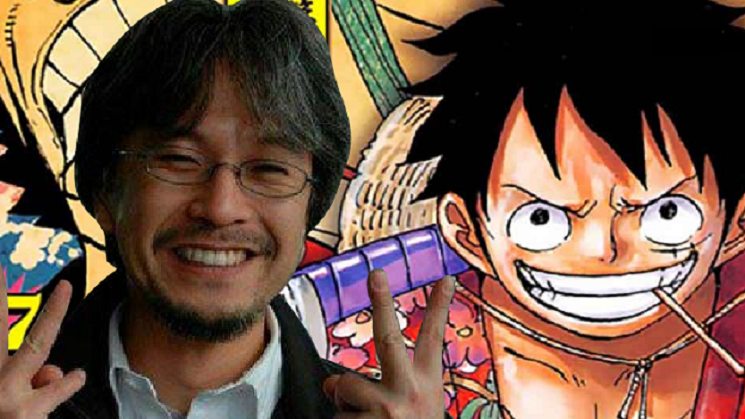

Aqui vc encontra as melhores cenas de one piece (opinião pessoal fodass) e vem agora o mussum ipsum pra encher linguiça: Mussum Ipsum, cacilds vidis litro abertis. Paisis, filhis, espiritis santis.Vehicula non. Ut sed ex eros. Vivamus sit amet nibh non tellus tristique interdum.Si num tem leite então bota uma pinga aí cumpadi!Diuretics paradis num copo é motivis de denguis.
In elementis mé pra quem é amistosis quis leo.Suco de cevadiss deixa as pessoas mais interessantis.Leite de capivaris, leite de mula manquis sem cabeça.Não sou faixa preta cumpadi, sou preto inteiris, inteiris. Abaixo o link pro site mais brabo.
Luffy desperta o gear 5 e descobrimos que sua akuma no mi na vdd é a hito hito no mi - modelo Nika (Deus Sol). Cap 1044 / vol 103- página 13 https://onepieceex.net/mangas/leitor/1044/#13
Agora um treino de tags pra mostrar que nóis estuda
mini formulario para mandar mensagens.
Endereço:
Onde vagabundo não tem vez e malandro faz a festa
Telefone:
33218600 (quero trocar o meu sofá amarelo)
E-mail:
manuella.balbino@outlook.com
Tags para ficar na mente
Text
This is bold and this is strong. This is italic and this is emphasized. This is superscript text and this is subscript text. This is underlined and this is code: for (;;) { ... }. Finally, this is um link para um tesouro mundial.
Spoiler cap 1044
Guerreiro da Libertação
Capa: Excursão sem emoção da Germa 66, Vol. 8: “Mamãe está em uma expedição. A pesquisa começou!!”. Oven deixou o livro aberto nas páginas de Niji e Yonji em uma sala onde estão alguns dos filhos de Big Mom (Prim, Kato, Brownie e Anana). Enquanto Oven se despede, seus irmãos se preparam para iniciar diversos experimentos nos corpos de Niji e Yonji (usando facas, serras, martelos, lasers…).
O capítulo começa com Luffy falando. Embora não possamos vê-lo de perto, o som dos tambores está ficando mais alto.
Luffy: “O que aconteceu? Eu… Por quê? …Como posso me levantar se perdi? De repente, tudo parece tão divertido… Ahahahah!!”
Enquanto Luffy fala, é visto à distância que relâmpagos negros saem do seu corpo.
Zunesha ainda está com os navios do Governo Mundial no mar perto de Wano. Momonosuke olha para o telhado de Onigashima. Ele está muito transtornado e trêmulo.
Momonosuke: “Joy Boy…!? Você quer dizer Luffy!?”
Yamato: “É isso… o que Zunesha disse!!?”
No Salão do Prazer da Torre Esquerda, vemos que Some está cuidando de Sanji, que está deitado em um futon. De repente, Sanji se levanta porque sente algo e olha para cima.
Some: “Ei! Aaaahhhh
Sanji: “…!! Ha, ha… Luffy…!?”
No Palco Principal, os aliados de Luffy também estão sentindo algo. Kid, Law e Hyougoro olham para cima.
Kid: “O quê!?”
Hyougoro: “Ah… Isso é o Chapéu de Palha…!?”
Marco também sente algo e conta para Nami e Tama, que estão chorando abraçadas.
Marco: “Chapéu de Palha…!? Ei! Ele ainda está respirando.“
Nami: “Luffy está vivo!!?”
Tama: “Ele está realmente vivo!!?”
Na Terra Sagrada de Mary Geoise, na “Sala da Autoridade”, dentro do Castelo de Pangea, o Gorousei continua falando sobre a situação em Wano.
Um deles questiona se vale a pena perder um agente de primeira e irritar Kaido. O Gorousei com dreadlocks responde que vale a pena, especialmente considerando o essa situação pode causar no futuro.
Gorousei espadachim: “O Governo Mundial tem tentado pegar a “Gomu Gomu no Mi” para si em todas as épocas da história… Mas, de alguma forma, a fruta sempre escapa. E 800 anos se passaram…!!”
Gorousei com grande barba e bigode: “É como se aquela Akuma no Mi tentasse escapar deles.”
Gorousei com uma mancha na cabeça: “É possível, pois sabemos que as frutas Zoan têm mente própria. E essa fruta tem o nome de um “deus”… O outro nome da “Gomu Gomu no Mi” é…”
Gorousei loiro: “Hito Hito no Mi Zoan Mítica… ‘Modelo Nika’.”
Enquanto o Gorousei fala, aparece a silhueta de Luffy com a lua cheia ao fundo em uma magnífica e épica página dupla.
Sua silhueta é idêntica à de Nika (sem armas nas mãos). Embora vejamos apenas uma silhueta negra, é evidente que Luffy está rindo. Além disso, o som dos tambores continua.
Luffy: “Ahahahahahaha!!!”
O Gorousei continua falando, enquanto vemos um close da silhueta do rosto de Luffy, que continua rindo.
Gorousei: “Seu corpo tem as propriedades da borracha.
E ele pode lutar da maneira que quiser…
Fazendo as pessoas sorrirem por onde passa.
Ele é o ‘Guerreiro da Libertação’, também conhecido como…
‘Nika, o Deus do Sol.‘
O despertar dará ao corpo de borracha ainda mais ‘força’ e ‘liberdade’.
Dizem que…
é o poder mais ridículo do mundo!!”
No “Salão do Tesouro” no 2º andar do castelo Onigashima, Orochi ainda está preso sob os escombros.
Orochi: “Ei… Hiyori!! Eu também era seguidor de Oden…!! Eu fui… usado pelo Kaido!! Vamos fugir daqui juntos…!! Agora tire as agulhas…”
Hiyori: “Meu pai manteve sua promessa, certo? Ele acreditou na promessa que você e Kaido fizeram para libertar Wano.
Durante 5 anos, meu pai dançou de um jeito engraçado…!! Mesmo contra a família dele!! Meu pai manteve sua palavra!! Ele acreditava na promessa de libertar todos eles.
Ele até suportou uma hora queimando em óleo fervente…!! Ele estava sempre rindo… Mesmo que a vida de um país inteiro fosse deturpada. Meu pai suportou toda essa dor sozinho!!!”
É mostrado um pequeno flashback entre Oden e Hiyori.
Oden: “O que aconteceu, Hiyori?”
Hiyori: “Pai, você está bem com todo mundo falando mal de você?”
Oden: “Sim, estou bem com isso. Sabe por quê? Porque tenho vocês ao meu lado!!”
Hiyori: “Sério!? Então vamos ficar juntos para sempre.”
De volta ao presente, Orochi fala agora.
Orochi: “Ah sim!! Oden era um grande samurai!! Como um “Shogun”, honrarei seu pai…”
Hiyori tira sua máscara e grita de raiva com Orochi enquanto lágrimas escorrem de seu rosto.
Hiyori: “Meu nome é ‘Kouzuki Hiyori’!!! Cale-se, homem insolente!!!”
Orochi: “Ehhh!!!”
Hiyori: “Mesmo quando estive com o estômago vazio e vestindo roupas rasgadas, eu vivia de cabeça erguida por causa do nome do meu pai!!
Você não deveria estar na posição de “Shogun” nem por um dia!! Você é um idiota patético!!! E com o aumento de sua estupidez, vidas inocentes estão perecendo em vão!!”
Orochi fica muito assustado após as palavras de Hiyori.
Orochi: “Você não vai fazer nada comigo, certo!!? A vingança não é muito popular hoje em dia!! E mesmo se você me matar, você não tem chance de derrotar Kaido!!”
De repente, uma pequena versão do Kazenbo de Kanjuro retorna para onde Orochi e Hiyori estão.
Kazenbo: “Orochi-sama…”
Orochi: “Ah?”
Kazenbo: “Eu… fa… lhei…”
Orochi: “Kanjuurou!? Você voltou na hora certa!! Isso muda o jogo!! Queime essa mulher até a morte!!! Que tragicomédia! O remanescente dos ‘Kouzuki’. Essa é a ‘sorte’ dos mais fortes!!!”
Kazenbo: “Orochi-sama…”
Orochi: “Eh!? Ei!! Que diabos está fazendo!!! Aaaaahhhh!!!”
O Kazenbo ignora as palavras de Orochi e, em vez de atacar Hiyori, vai para Orochi, que começa a queimar ardentemente. Hiyori olha para ele ainda com lágrimas nos olhos.
Hiyori: “O ‘amanhecer’ virá.
Orochi: “Kanjuro idiota, o que você fez?!!! Hiyori, me ajude!!!”
Hiyori: “A Casa Kouzuki… sempre cumpre suas promessas!!”
De volta ao telhado de Onigashima, vemos novamente a silhueta de Luffy com a lua cheia ao fundo.
Luffy: “Eu sinto que posso fazer o que eu quiser…!! As batidas do meu coração soam tão divertidas!! Este é o meu ápice…!! Isto é… o “Gear Fifth”!!!”
De volta ao Palco Principal, uma enorme explosão do Haki do Rei Supremo vem de cima. Muitos relâmpagos negros atravessam o telhado e os subordinados de Kaido começam a cair inconscientes espumando pela boca. Kaido parece preocupado com o telhado.
Kaidou: “O que tem lá no telhado…!!!”
Em um enorme página dupla, vemos que o teto começa a despedaçar e o braço de Luffy aparece do buraco. O braço é enorme e agarra o corpo de Kaido em forma de dragão sem dificuldade. Todos olham para a cena chocados.
Kid: “Chapéu de Palha…!?”
Chopper (chorando): “Luffy!!?”
Luffy puxa Kaido para cima (os olhos de Kaido saltam, como um desenho animado) e o arrasta facilmente para o telhado. Luffy então aumenta sua massa muscular (como na imagem vazada) e começa a girar o corpo de Kaido descontroladamente. O rosto de Kaido parece novamente um desenho animado, seus olhos saltam mais uma vez.
Luffy: “Hah. Hah. Ahahahah!!”
Kaido: “Chapéu de Palha…!! Você está vivo…!! Obrigado. Bolo Breath”!!!”
Luffy: “Ahahahaha!! Eh? Aaaahhhh!!!“
Luffy havia voltado à sua forma normal e estava deitado no chão, rindo sem parar, porém grita surpreso ao ver o “Bolo Breath” de Kaido.
Seus olhos também saltam como um desenho animado, porém de modo ainda mais exagerado do que os de Kaido (Luffy age como o personagem de Jim Carrey no filme “O Máscara”).
Luffy agarra o chão com as mãos e o estica, fazendo com que o chão se transforme em borracha. O “Bolo Breath” de Kaido atinge o chão, que repele o ataque e não é destruído por agora ser de borracha.
Luffy volta para sua forma musculosa e puxa o chão, fazendo com que o “Bolo Breath” salte de volta para Kaido. Há uma grande explosão.
Finalmente vemos o corpo inteiro de Luffy claramente. Sua aparência física é quase a mesma de sempre, embora sua camisa agora seja branca em vez de preta.
Seu cabelo agora parece chamas e há uma espécie de vapor volta do pescoço e sob as axilas (como na forma do Gear 4). Suas sobrancelhas agora estão curvadas (semelhante às de Sanji) e as pupilas de seus olhos mudaram (confira na imagem vazada abaixo).
Luffy ri sem parar novamente enquanto Kaido se levanta. O “Gear Fifth” é apresentado oficialmente.
Luffy: “Ahyahyahya!!”
Kaido: “Perdão pelo que aconteceu antes, eu fui ESTÚPIDO…!! Não queria ganhar daquela forma.”
Luffy olha para Kaido com determinação e um sorriso no rosto.
Luffy: “Não tem problema!! Vamos terminar isso!!!”
FIM DO CAPÍTULO.
Esta é uma citação tirada da Opex.
bulhufas e piadolas
Vc sabia que:
One Piece já é o mangá mais vendido da história e agora, está perto de bateu uma marca importante: seu criador, Eiichiro Oda, esta entre Top 10 de autores que mais venderam na história da literatura..
 Eiichiro Oda (尾田 栄一郎 Oda Eiichirō?, Kumamoto, 1 de janeiro de 1975) é um mangaká, sendo mais conhecido como criador da série One Piece (1997-Presente). One Piece é o Mangá mais vendido de todos os tempos com 480 milhões de cópias vendidas em todo o mundo, rendendo à Oda o título de um dos autores de ficção mais vendidos. A popularidade da obra resultou em Oda ser nomeado como um dos maiores artistas de todos os tempos que mudou a História dos Mangás.
{kind=link}
{kind=link}
{kind=link}
{kind=link}
{kind=link}
{kind=link}
{kind=link}